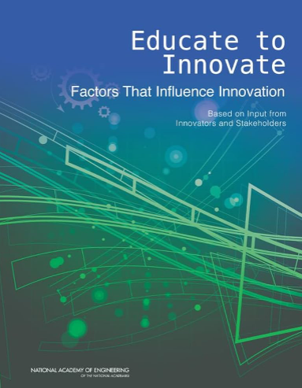

Environmental responsibility and awareness are becoming more and more important as the twenty-first century goes on, particularly in the field of education. , four undergraduate students from North-West University in South Africa, are proud to introduce this groundbreaking Open Educational Resource (OER) textbook, which is the culmination of their combined expertise and diligence. Under the astute direction of Dr. M. Johnson, this textbook is an essential tool that gives teachers a useful and approachable way to improve their environmental science instruction.
It seeks to enable educators to design stimulating classroom environments where students are not just learners but also engaged contributors to solving environmental issues on a global scale.
The materials featured on this website are predominantly created by students. Although we aim to uphold a high level of quality, we cannot assure the accuracy, reliability, or completeness of the information presented. Users are advised to critically assess the resources and utilize them at their own discretion. Neither the founders nor North-West University are responsible for any errors, omissions, or outcomes resulting from the use of this information.